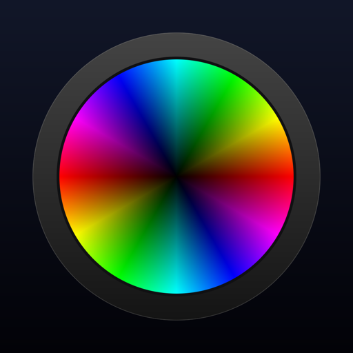
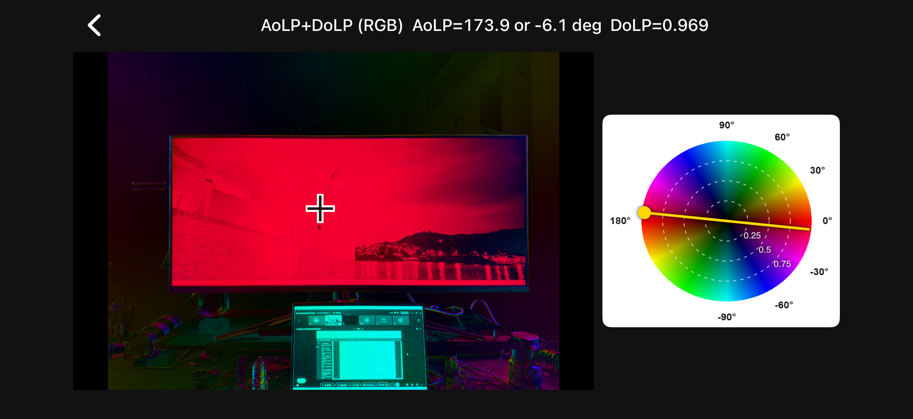

Polarization imaging · iPhone
See how light is polarized.
Four angles reveal a new view of light. S012Cam shows the degree and direction of linear polarization in reflections, screens and the sky.

Actual measurements
One scene. Two ways to read polarization.
Colour shows the angle. Grayscale shows the degree. These are actual S012Cam views of light from a monitor.

AoLP + DoLP — colour for angle, brightness for degree. DoLP — black is 0, white is 1. The selected point differs between views.
DoLP — black is 0, white is 1. The selected point differs between views.Learn how to read the results
Find your next step.
Understand polarization
Start with reflections, screens and the meaning of the colour wheel.
Polarization basicsExplore the app
See capture modes, results, exports and compatible iPhones.
The appUse the Rotator
Assemble, calibrate and mount the four-angle accessory.
Polarizer RotatorTake a measurement
Choose handheld or fixed, then Gyro or Timer.
User manualChoose a kit
Compare the DIY kit and the fully assembled version.
Buying optionsGet help
Find capture tips, troubleshooting and contact details.
Support